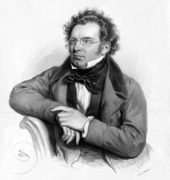

My Projects
Home Improvements
You know how you start home projects
and then never finish them?
Take it from me: don't put these things off.
You never know how much time you might have left.
If only we'd had Home Depot in the 19th Century!

Project 2: Symphony in b minor
This project is something I never got around to finishing.
I got distracted after writing the first two movements.
In any case, the work is complete as it stands.
Project 3: Symphony No. 10
My latest project was interrupted by my untimely departure.
As
great as my "Great" C Major Symphony was,
imagine how much
greater a Tenth Symphony might have been.